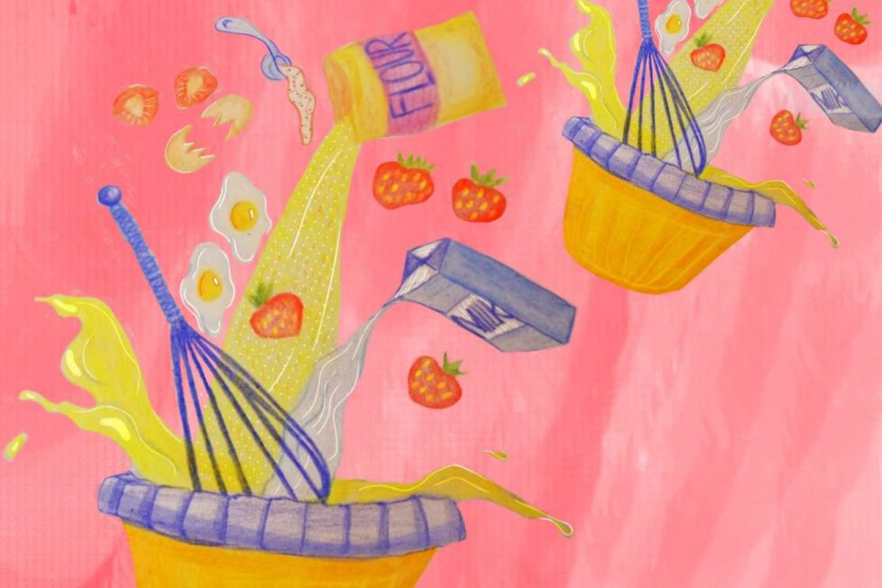

Pat-a-cake, pat-a-cake, baker's man, bake me a cake just as fast as you can...

Pat-a-Cake, Pat-a-Cake!
Pat-a-cake, pat-a-cake, baker’s man!
Bake me a cake just as fast as you can.
Pat it, and prick it, and mark it with T,
And put in the oven for Tommy and me.